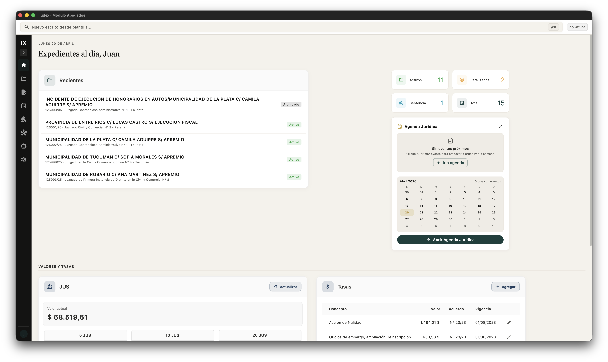
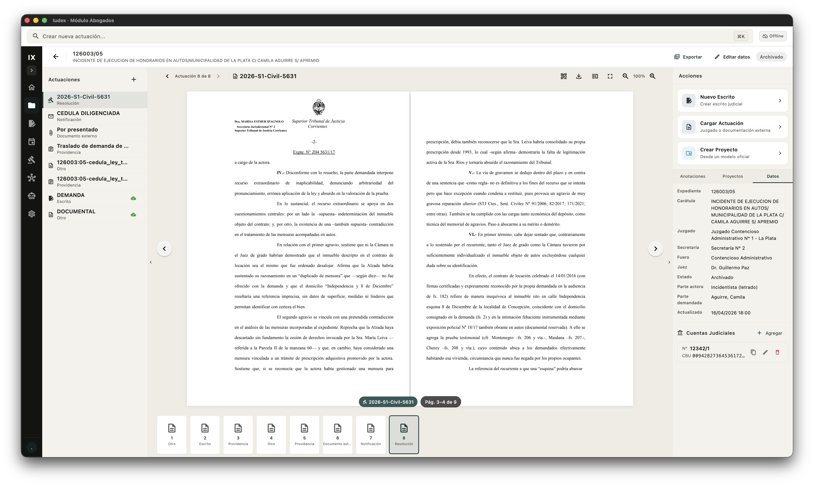
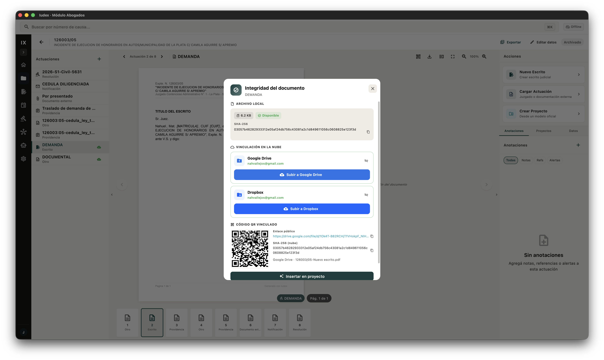
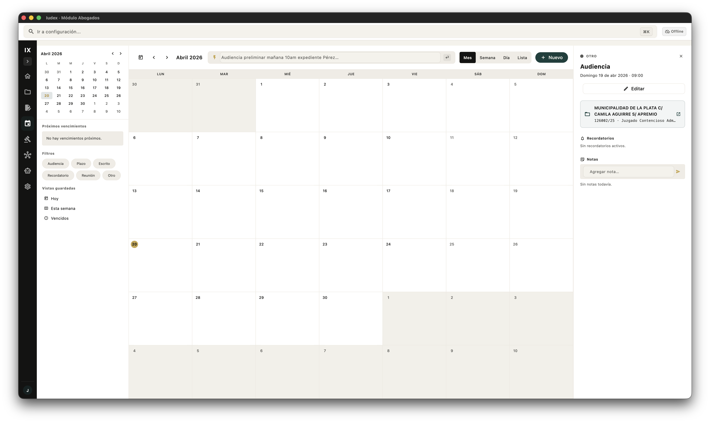
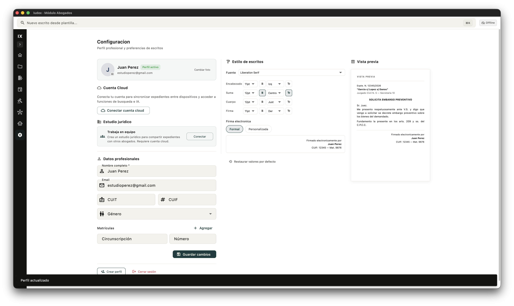
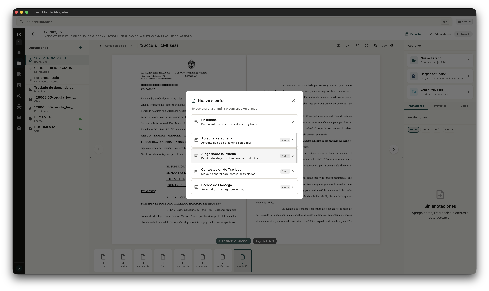

Contá el caso, no busques palabras
Describí el problema jurídico con tus propias palabras. La respuesta llega con fallos argentinos citados, cada afirmación atada a su fuente.
Investigar, conectar, decidir — en un mismo hilo. Hecho en Corrientes, para abogados y juzgados correntinos.
El tiempo se va cambiando de pantalla: del buscador al PDF, del PDF al Word, del Word al expediente. Múltiples sistemas, instructivos eternos y formularios tediosos para una sola tarea.
Mismo encabezado, mismos párrafos, mismas cláusulas. Reescritas a mano, caso tras caso, porque el estudio no tiene memoria propia.
Carpetas en el escritorio, PDFs en el correo, notas en papel, planilla aparte. Recomponer lo que tenés lleva más tiempo que pensar el caso.
Un vencimiento procesal depende de una alarma en el celular o de acordarte vos. Lo importante no debería vivir en un post-it.
Word, Excel y el correo no fueron pensados para el ejercicio jurídico. Te adaptás vos, todos los días, a la forma de pensar de un procesador de texto.
¿Cuál era el modelo vigente? ¿El último enviado? ¿El que ya tenía los cambios pedidos? Sin historial común, la versión correcta se pierde.
Crecer no debería costar horas. Sin método compartido, cada cliente nuevo agrega ruido en vez de rutina.
Construimos un asistente que trabaja con IA sobre una base de jurisprudencia correntina estructurada y clasificada. Sin alucinaciones, sin citas a fallos inexistentes — solo fuentes reales y actualizadas.
Acá no se busca por palabras clave: la búsqueda es semántica y conceptual. Un verdadero asistente de investigación. A vos te queda aplicar el criterio y pensar la ciencia jurídica, no la informática.
Iudex investiga con vos, no por vos. Tres momentos, un mismo hilo: definir el caso, conectar fuentes, producir el escrito.
Describí el problema jurídico con tus propias palabras. La respuesta llega con fallos argentinos citados, cada afirmación atada a su fuente.
Lo que leés, lo que anotás y lo que archivás queda conectado al caso. Cada cita es rastreable. Ninguna respuesta sin fuente.
La demanda, el recurso o la notificación se arman con el contexto del caso y las citas de tu propia investigación. Solo te queda la revisión final.
Vistas del trabajo de todos los días. Expedientes, agenda, notificaciones digitales, modelos. Lo que ya funciona, libre y gratuito, — sin depender de IA ni de internet.






Los expedientes del día, la agenda próxima y los valores del JUS — al abrir la app, en una sola vista.
Actuaciones, partes, documentos, cuentas judiciales y notas en un solo hilo por caso. Lo que pasó queda registrado; lo que se viene, también.
QR y almacenamiento en la nube.
Vinculá tu cuenta de Google Drive o Dropbox.
Con un click tus copias para traslado se suben y se genera la cédula electrónica, con QR y la estructura requerida.
Vencimientos, audiencias y recordatorios sincronizados con cada expediente. Los plazos dejan de vivir en la memoria.
Preferencias del equipo, usuarios, permisos y plantillas — en un solo panel. Configurás una vez y queda para todo el estudio.
Plantillas propias del estudio, con el contexto del expediente ya cargado. La demanda arranca con el caso adentro, no con una hoja en blanco.
Expedientes, investigación, escritura y gestión — partes del mismo trabajo, no módulos separados.
El caso entero en un hilo: estado, actuaciones, partes y documentos. Lo que pasó queda registrado. Lo que se viene, también.
ExpedientesPregunta en lenguaje natural, respuesta con fallos argentinos citados y linkeados. Guardás sesiones por caso, comparás criterios, armás el argumento. Ver cómo funciona →
InvestigaciónDemandas, recursos y notificaciones se componen con el contexto del expediente y las citas de tu investigación. Tu criterio, sobre trabajo ya hecho.
EscrituraPlazos que avisan antes del vencimiento, fichas de cliente con todo el contexto, modelos compartidos por el equipo y métricas reales del trabajo. Sin abrir una planilla.
GestiónIudex nace del cruce entre el trabajo cotidiano en el sistema judicial argentino y la práctica de construir software con IA aplicada. Para colegas que tienen causas en Corrientes y Buenos Aires al mismo tiempo, y necesitan criterio, no complejidad.
Si sabés usar un procesador de texto, podés usar Iudex. El primer caso investigado, en diez minutos.
Terminología, fueros y formatos del sistema judicial correntino. Funciona con jurisprudencia argentina, no con traducciones.
Ninguna respuesta sin fuente. Los datos del estudio cifrados de extremo a extremo, con cumplimiento de la normativa argentina.
Equipo local, castellano argentino, respuesta directa. No un bot con guión.
No son promesas de IA: son fricciones concretas del trabajo diario, resueltas una por una. Sumadas, devuelven una hora cada mañana.
Abrí un expediente, disparás un escrito o saltás a un fallo sin tocar el mouse. La mano no abandona el teclado.
Escribís {DEMANDADO} en una plantilla y se autocompleta con los datos del caso. Cada estudio arma las que usa: {ACTOR}, {JUZGADO}, {MONTO}, fechas, número de expediente.
Iudex convive con los sistemas judiciales provinciales y trae el listado completo de expedientes. Sin carga manual caso por caso.
Subís los PDFs del expediente y se ordenan por fecha. Con OCR: buscás por texto dentro de cualquier documento.
Tribunales, colectivo, café con WiFi flojo. Seguís trabajando y Iudex sincroniza cuando vuelve la conexión.
Marcás, subrayás y dejás notas sobre el documento. Volvés seis meses después y la lectura anterior te está esperando.
Valor del JUS, tasa de justicia, honorarios por etapa. Sin salir del expediente ni abrir una planilla aparte.
Cada versión queda registrada. Comparás v1 contra v3, volvés atrás, nunca pisás el trabajo anterior por accidente.
Un expediente, varios abogados del estudio. Permisos claros, una sola fuente de verdad — no tres copias en carpetas de Drive.
Un caso del fuero laboral correntino en tres movimientos: pregunta en lenguaje natural, investigación por sesión y escrito armado con las citas propias.
Leer la notaDiez años dentro del sistema de justicia argentino. Nahuel cuenta cómo ese recorrido se convirtió en la decisión de construir una herramienta con menos fricción.
Leer la notaLos primeros abogados y juzgados que lo usen trabajan con nosotros en cómo crece. Acceso sin costo durante tres meses.
Sin tarjeta. Sin compromiso. Solo acceso anticipado.
Disponible en Corrientes.